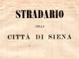

|
- LE VECCHIE FOTOGRAFIE DI SIENA -
un particolare ringraziamento a coloro che ci hanno inviato il loro materiale |

 Il primo servizio pubblico e la pavimentazione a mattoni di via del Poggio cliccate sull'immagine per ingrandirla  PIAZZA DEL CAMPO COME NON L'AVETE MAI VISTA (75 foto) PIAZZA DEL CAMPO COME NON L'AVETE MAI VISTA (75 foto)  IL PALIO DEL 17 APRILE 1904 (15 foto) IL PALIO DEL 17 APRILE 1904 (15 foto)  EDIFICI DI SIENA CHE NON ESISTONO PIU' (31 foto) EDIFICI DI SIENA CHE NON ESISTONO PIU' (31 foto)  MEZZI DI LOCOMOZIONE (37 foto) MEZZI DI LOCOMOZIONE (37 foto)  BOTTEGHE E EDIFICI COMMERCIALI (52 foto) BOTTEGHE E EDIFICI COMMERCIALI (52 foto)  LE PORTE DI SIENA (14 foto) LE PORTE DI SIENA (14 foto)  LE SCUOLE (17 foto) LE SCUOLE (17 foto)  FONTI E FONTANE (32 foto) FONTI E FONTANE (32 foto)  LAVORI IN CORSO (19 foto) LAVORI IN CORSO (19 foto)  STRADE DI SIENA (80 foto) STRADE DI SIENA (80 foto)  STRADARIO DEL 1871 (19 tavole) PIAZZA DEL MERCATO (19 foto) PIAZZA DEL MERCATO (19 foto)  SIENA FUORI PORTA (32 foto) SIENA FUORI PORTA (32 foto)  MISCELLANEA FOTOGRAFICA DI SIENA (26 foto) MISCELLANEA FOTOGRAFICA DI SIENA (26 foto) COME ERA SIENA IN CARTOLINA (oltre 6700 cartoline) COME ERA SIENA IN CARTOLINA (oltre 6700 cartoline) |